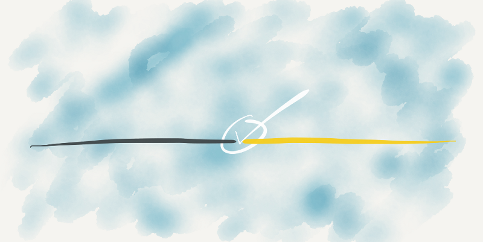
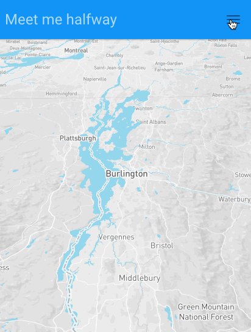

I have trouble getting together with friends these days. I’m not alone in this — distance is a surprising obstacle to maintaining relationships in the landscape of modern America. Can a hack-of-an-app help?
Over Thanksgiving I was traveling with my family and found out that a friend — one I don’t often see — would be nearby. As often happens in these situations, I mentally considered “what semi-decent bar is about halfway between us?” It’s not the first time this has happened; as my good friends from past experience have scattered around the world, it’s become harder for all of us to find those opportunities to meet.
Then I thought — what the hell; I already have access to all the data I need to answer the “bars halfway” question, even in the unknown terrain between two arbitrary points of origin. Some nifty tools for mining that data have recently become easier to use, so I knocked together a mobile-ready webapp prototype. I assembled it with:
- Mapbox GL
- Bootstrap made to look like Google’s material design
- Mapbox directions for determining the routes
- turf.js for basic geoprocessing of midpoints and radii
- Foursquare places for well-rated venues within a basic catchment
And it turned out alright:

Searching for ‘za in the Green Mountains
It’s a prototype — try it out over the weekend; let me know what works and what doesn’t. Feel free to fork your own version from the source repository (though I ask that you get your own API keys).
Ironic coda #1
As is usually the case when I get enthusiastic about something like this, I wait until after I’ve started before I remember to run some due diligence. And indeed, there are already a handful of sites that’ll answer the question I posed. But I was aiming for a mobile audience, and this was still a fun learning exercise.
Ironic coda #2
Over Thanksgiving we didn’t meet halfway — my friend drove all the way to where I was. My kids were getting tired, and even with an app that can halve your potential trip, there’s no replacement for a friend who’s willing to drive further to make your life easier.